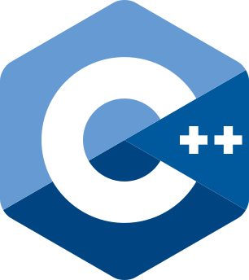
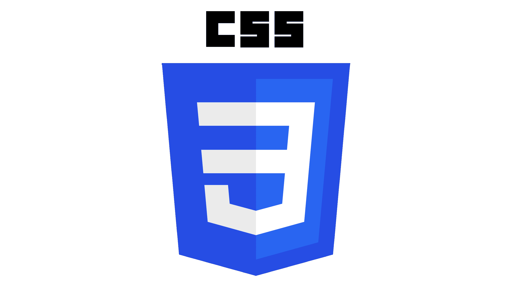
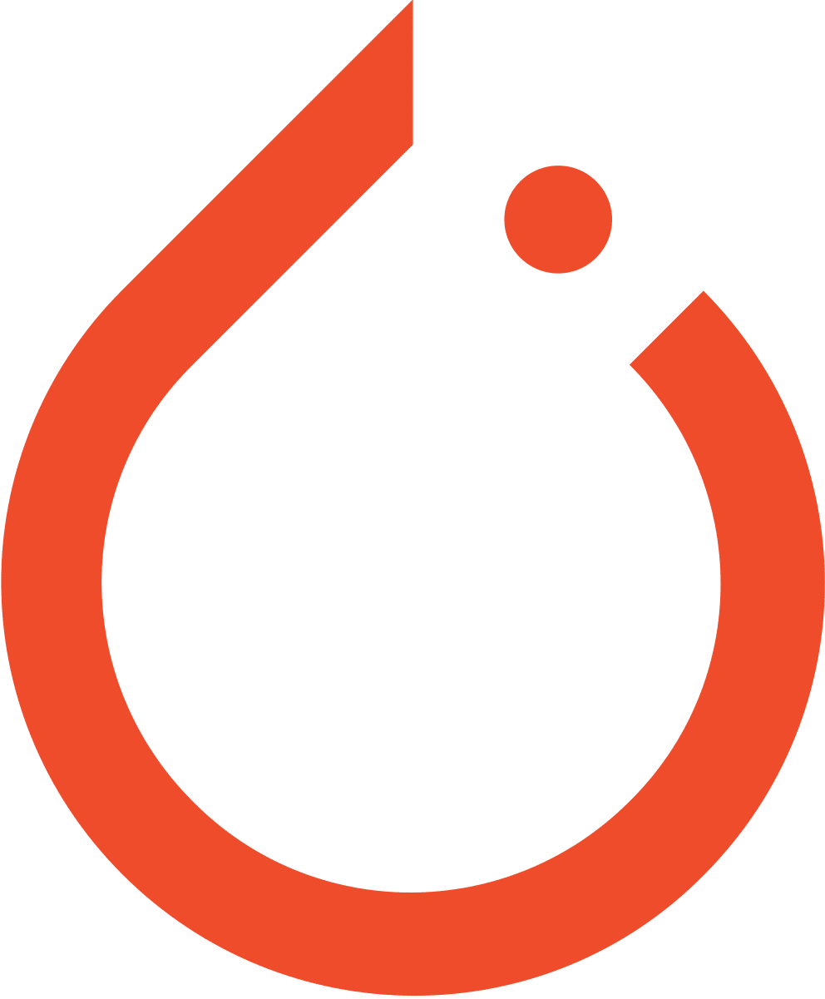
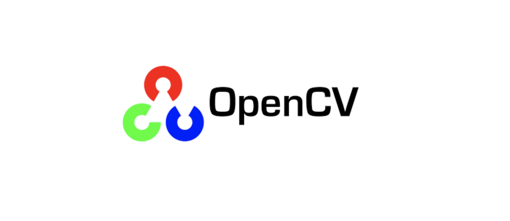
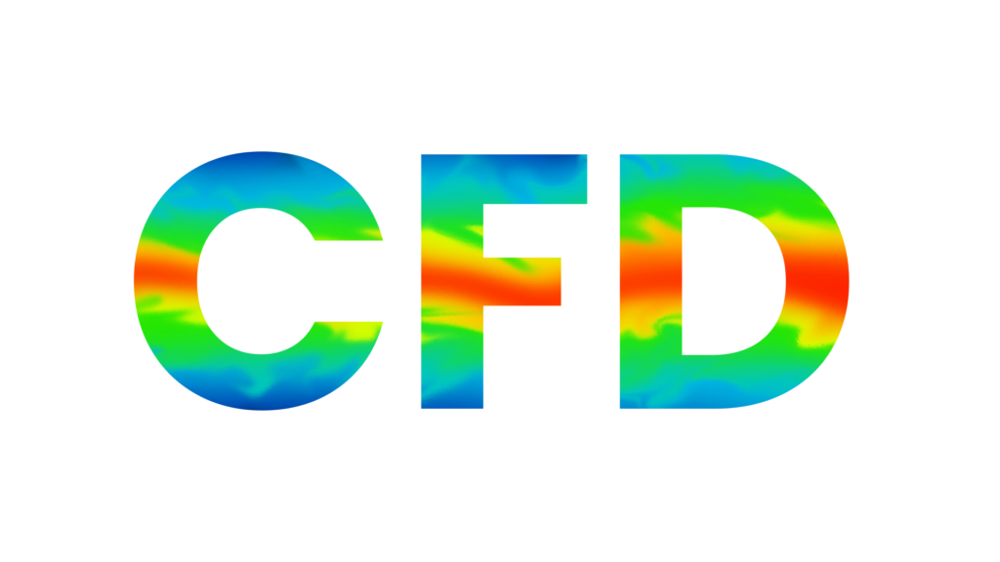
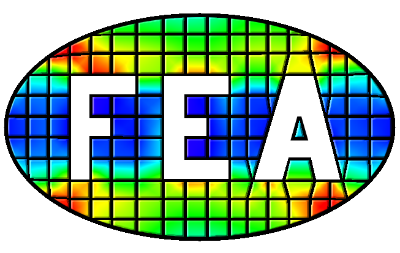

Deciphering archive…
⟁ 29.9792° N · 31.1342° E
Welcome I'm Alex
Interact with the 3D model below!
About






Skills
C++
Pytorch
Java
OpenCV
 Html
HtmlTensorflow
Css
CAD
 JavaScript
JavaScriptML/AI
CFD
MediaPipe
FEA
Projects
Using MediaPipe, TensorFlow, OpenCV, PyTorch, and Python to train a new AI model
to recognize ASL hand signals and output to the screen what gesture you are making
with either one or both hands.
Using a 3D scanner and guitars I own, I will scan two different guitars, import them
into CAD, merge the two body styles together, and customize features such as the body
shape, hardware, and whammy bar.
A personal portfolio website built with HTML, CSS, and JavaScript to showcase my
engineering, programming, and design projects.
Our group is creating an Remote Controlled electric boat that also has use hold 60lbs from scratch to be used in the PEP compition for 2027. We will be building a brand new Hull and redoing all electronics, we are going to
use CFD and FEA to optimize our design for efficiency and reliability since we have to cover 1 nautical mile.